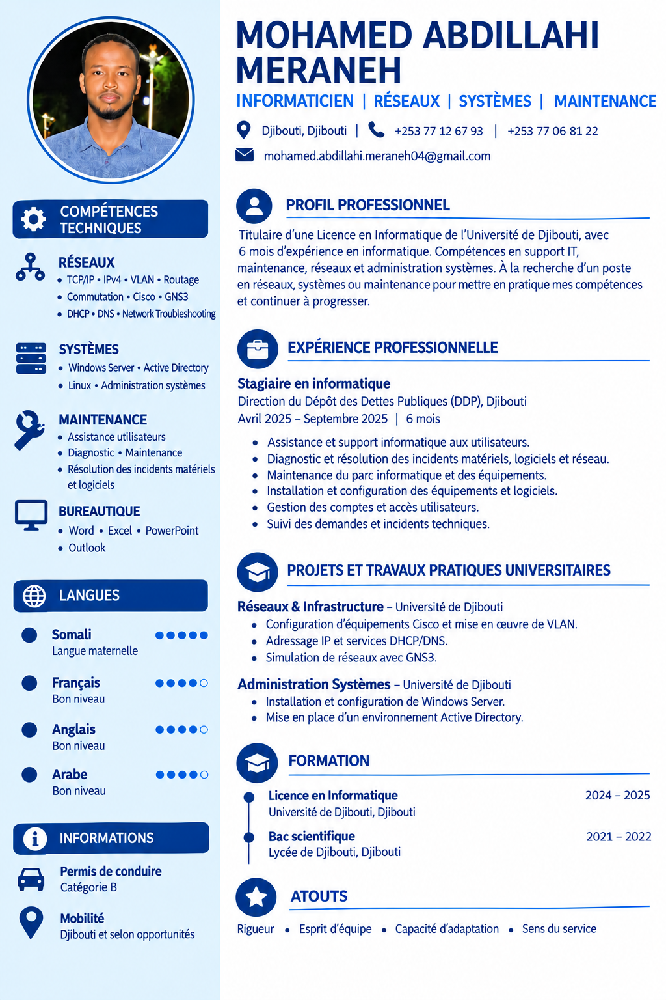

⌘
Réseaux
TCP/IP, IPv4, VLAN, routage, commutation, Cisco Packet Tracer, configuration et dépannage réseau.
INFORMATIQUE · RÉSEAUX · SYSTÈMES · MAINTENANCE
Titulaire d'une Licence en Informatique, passionné par les technologies, les réseaux, les systèmes et la maintenance informatique.
Je suis diplômé d'une Licence en Informatique de l'Université de Djibouti. Mon parcours m'a permis de développer des compétences en programmation, réseaux, systèmes et maintenance informatique.
J'ai également effectué un stage de 6 mois à la Direction des Dettes Publiques (DDP), où j'ai participé à des missions de maintenance, de configuration et de résolution d'incidents.
TCP/IP, IPv4, VLAN, routage, commutation, Cisco Packet Tracer, configuration et dépannage réseau.
Windows Server, Active Directory, Linux et administration des systèmes.
Diagnostic, installation, configuration et maintenance des équipements et logiciels.
Python, Java, PHP, C, HTML, CSS, JavaScript et MySQL.
Microsoft Word, Excel et PowerPoint.
Notions de virtualisation et environnement Docker.
Configuration d'équipements Cisco et mise en œuvre de VLAN, adressage IP et services DHCP/DNS.
Simulation et configuration d'environnements réseau avec Cisco Packet Tracer.
Conception d'une application de gestion dans le cadre universitaire.
Création d'un site vitrine pour un salon avec HTML, CSS et JavaScript.
Développement d'une application graphique avec Python et Tkinter.
Travaux pratiques autour de la virtualisation des applications avec Docker.
Université de Djibouti
Djibouti

Retrouvez mon parcours, mes compétences et mon expérience professionnelle.
Télécharger le CVVous avez une opportunité, un projet ou souhaitez échanger ? N'hésitez pas à me contacter.